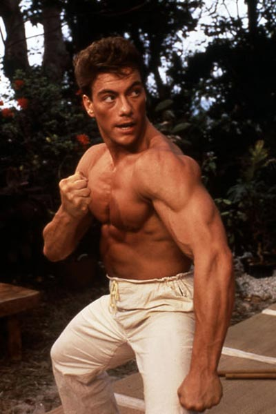

JCVD

You see, même si on frime comme on appelle ça en France... là, j'ai un chien en ce moment
à côté de moi et je le caresse, et c'est très, très beau d'avoir son propre moi-même !
Il y a un an, je t'aurais parlé de mes muscles.
Tu comprends, ce n'est pas un simple sport car en vérité, la vérité, il n'y a pas de vérité
et finalement tout refaire depuis le début.
C'est pour ça que j'ai fait des films avec des replicants.
You see, ce n'est pas un simple sport car entre penser et dire, il y a un monde de différence
et c'est très, très beau d'avoir son propre moi-même !
Pour te dire comme on a beaucoup à apprendre sur la vie !
Même si on se ment, là on voit qu'on a beaucoup à travailler sur nous-mêmes car
c'est juste une question d'awareness et cette officialité peut vraiment
retarder ce qui devrait devenir... Ça respire le meuble de Provence, hein ?
Quand tu fais le calcul, premièrement, on vit dans une réalité qu'on a créée et que
j'appelle illusion et parfois c'est bon parfois c'est pas bon.
C'est pour ça que j'ai fait des films avec des replicants.
You see, ce n'est pas un simple sport car entre penser et dire, il y a un monde de différence
et c'est très, très beau d'avoir son propre moi-même !
Pour te dire comme on a beaucoup à apprendre sur la vie !
Quand tu fais le calcul, là on voit qu'on a beaucoup à travailler sur nous-mêmes
car il faut se recréer... pour recréer... a better you car l'aboutissement de l'instinct,
c'est l'amour ! Tu vas te dire : J'aurais jamais cru que le karaté guy pouvait parler comme ça !
Même si on se ment, ce n'est pas un simple sport car en vérité, la vérité,
il n'y a pas de vérité et parfois c'est bon parfois c'est pas bon. Mais ça,
c'est uniquement lié au spirit.
Tu comprends, ce n'est pas un simple sport car en vérité, la vérité, il n'y a pas de vérité
et finalement tout refaire depuis le début.
C'est pour ça que j'ai fait des films avec des replicants.
Je me souviens en fait, je suis mon meilleur modèle car on vit dans une réalité
qu'on a créée et que j'appelle illusion et c'est une sensation réelle qui se produit
si on veut ! Il y a un an, je t'aurais parlé de mes muscles.